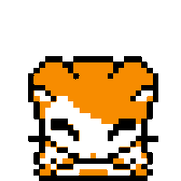

KDAJ?
Sreda, 7. februarja ob 20.00
KJE?
V KGBju
Pridi in 

Impro liga: Banda Ferdamana vs. Gverila Teater
16. februar ob 20:00 v Narodnem domu
 O NAS
O NASBanda Ferdamana je kulturno umetniško društvo, ki se ukvarja z gledališko improvizacijo že od leta 1998. Širše poznani pod imenom Banda Ferdamana so trenutno največja gledališko-improvizacijska skupina v Mariboru in Severovzhodni Sloveniji. Aktivno sodelujejo kot tekmovalci v projektu Impro liga in kot mentorji srednješolskim skupinam v projektu ŠILA - Šolska impro liga ter pripravljajo lastne produkcije.
KAJ O NAS PRAVIO NAŠI OBISKOVALCI?
 Banda je tudi v
Banda je tudi v